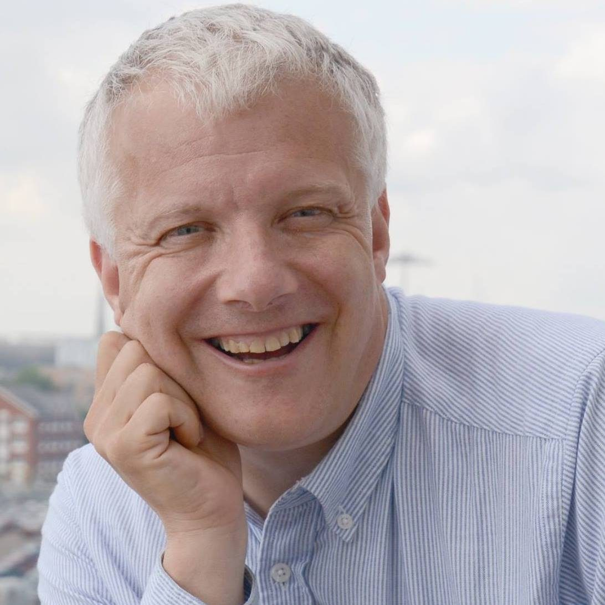
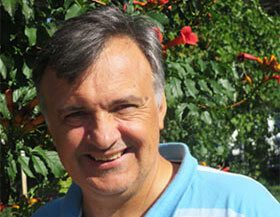
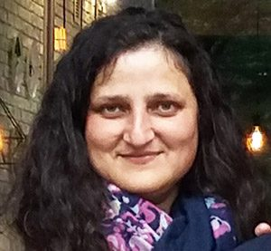

Bringing hope by sharing the love of Jesus
“A Father to the fatherless, a defender of widows, is God in His holy dwelling.” — Psalm 68:5
A UK Christian charity ministering to those in spiritual, physical and emotional need across Ukraine, Moldova and Sri Lanka — young and old, rich and poor, free and imprisoned.

A week of hope at Kompas Park
A ministry of hope since 1985
Hope Now is a Christian charity that aims to bring hope, by sharing the love of Jesus and making Him known — ministering to those in spiritual, physical and emotional need.
We seek to reach the young and old, rich and poor, healthy and infirm, free and imprisoned. The ministry began in 1985, working primarily in Ukraine, and since 2014 has expanded to Moldova and Sri Lanka. Over the years it has helped numerous people improve their lives.
“A Father to the fatherless, a defender of widows, is God in His holy dwelling.”
Psalm 68:5Mobile medical care, treatment funds and hospital visiting for those who cannot afford it.
Internats, rescue shelters, the House of Babies, foster care and pre-independence homes.
Churches within prisons, support for ex-prisoners and prison evangelism.
Plus Summer Camps, Supporting Churches, Zozulenka and other projects.
Bringing HOPE to those in need
Our caring ministries provide healthcare for children and adults in need, work in orphanages and the Rescue Shelter, run camps for children and widows, support foster families, and equip churches. Select any ministry to read more.
Rooted in Ukraine, reaching further
Hope Now has been working in Ukraine since 1992, with its headquarters in Cherkassy. Since 2014 the work has reached further afield.
Ukraine
The heart of our work since 1992, based in Cherkassy: healthcare, orphan care, prison ministry, education, evangelism, care for the elderly, summer camps at Kompas Park and church support.
Moldova
Since 2014 Hope Now has extended its reach into Moldova, sharing the love of Jesus with those in need.
Sri Lanka
Partnering with Farms Lanka, we support families, enable children to gain an education, and back small farms and other income-generating projects.
Led by faithful servants
There's a small, dedicated team behind Hope Now — in the UK and in Ukraine.

Jon Barnes
Hope Now UK
Misha Vyshemirskiy
Ukraine Director
Svieta Kravchenko
Director of Kompas ParkGlimpses from the field
A few photographs from the field — the children, families and older folk this work is all about.


Traditional Ukrainian music, full of hope
Zozulenka is a group of young people from School No. 20 in Cherkassy. Trained by their teacher Natalya, they perform regularly in Ukraine, and at the invitation of Hope Now made their first tour of the UK in 2011.
They perform traditional songs from Ukrainian culture together with some well-known English songs, and have since toured the UK several more times — keep an eye on the Latest News section for updates.
Host a concert. If your church would like to host a performance by Zozulenka, please contact the Hope Now Office. A DVD of some of Zozulenka's UK performances is also available from the office.
Your gift brings hope
Every gift helps us share the love of Jesus with those in spiritual, physical and emotional need. There are many ways to give, and UK taxpayers can make every gift go further through Gift Aid.
Give online
Make a one-off donation quickly and securely through our give.net page.
Donate via give.netStanding Order
Give regularly by standing order. Request a form by contacting the office through our contact page.
Cheque
Make cheques payable to “Hope Now Limited” and post to:
Hope Now International Head OfficeMalvern Centre, Malvern Road
Southampton, Hampshire, SO16 6PY
Sponsorship
Multiple sponsorship options are available, including student support. Contact the office for details.
Gift Aid
UK taxpayers can enhance donations through Gift Aid. A declaration form is available for download and submission to the office.
Legacy
If you are interested in leaving a bequest to Hope Now, please contact the office for information.
Newsletters & updates
Read our newsletters from over the years, or follow along on social media for the latest from the field.
We'd love to hear from you
If you prefer to write rather than type, please send your letters to the Hope Now office.
Hope Now International Head Office
Malvern Centre, Malvern RoadSouthampton, Hampshire
SO16 6PY, United Kingdom
Call us
Follow us
Find us on Facebook, Instagram and YouTube.
Will you help bring hope?
Whether you give, pray, or come and serve, you become part of what God is doing in Ukraine, Moldova and Sri Lanka. We'd love you to join us.